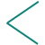

<ion-grid [style]="keyboardShown ? 'visibility: hidden' : 'visibility: visible'">

  <ion-row style="margin-bottom: 20px;">

    <ion-col size="1.2" class="col-margin">
      <ion-buttons (click)="closeForm()">
        
      </ion-buttons>
    </ion-col>

    <ion-col size="5.4"></ion-col>

    <ion-col size="1.2" class="col-margin">
      <ion-buttons (click)="previousStep()">
        
      </ion-buttons>
    </ion-col>

    <ion-col size="1"></ion-col>

    <ion-col size="1.2" class="col-margin">
      <ion-buttons (click)="nextStep()">
        <ion-spinner name="crescent" color="primary" *ngIf="loading"></ion-spinner>
        
        
      </ion-buttons>
    </ion-col>

  </ion-row>


  <ion-row style="margin-bottom: 21px;">

    <ion-col *ngFor="let i of rangeArray" size="{{ 10.4 / steps }}">
      <div [className]="currentStep === i ? 'selectedLine' : 'simpleLine'"></div>
    </ion-col>

  </ion-row>

</ion-grid>

